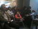

پذيرش > تریبون > گزارش كمپين > آغاز به كار كمپين يک ميليون امضاء در زنجان


 آغاز به كار كمپين يک ميليون امضاء در زنجان آغاز به كار كمپين يک ميليون امضاء در زنجان
21 آبان 1385 - الناز ناطقی - نسخه قابل چاپ
با گذشت دو ماه از آغاز به كار «كمپين يک ميليون امضاء براي تغيير قوانين تبعيضآميز» در تهران، تلاش فعالان حوزهی زنان در شهرهای ديگر ايران براي پيوستن به كمپين نشان داد، جمعآوري يک ميليون امضاء نه در انحصار شهر تهران است و نه فعالان زن تهراني در اين كارزار تنها هستند. به طوري كه تا كنون كمپين يک ميليون امضاء در شهرهايی مانند تبريز، اصفهان، همدان، گرگان و زنجان اعلام موجوديت و شروع به كار كرده است و شهرهايي چون يزد، اردبیل، قزوین، بندرعباس، اراک، رشت، سنندج، مریوان و ... در حال فراهم كردن مقدمات برگزاری سمينارهایی به همين منظور و كارگاههای آموزشی كمپين هستند.
شهرستان زنجان نيز در حالي فعاليت خود را براي جمعآوری يک ميليون امضاء شروع كرده است كه پنجشنبهی گذشته 11 آبان ماه سميناري با عنوان «جايگاه زن در قوانين ايران» براي آشنايي بيشتر فعالان اجتماعی اين شهرستان با قوانين تبعيضآميز و طرح كلي كمپين يک ميليون امضاء برگزار شد. اين سمينار كه با حضور بيش از صد نفر از زنان و مردان و با وجود بارش شديد باران كار خود را با اعلام موجوديت كمپين در شهرستان زنجان به انتها برد، از سه بخش تشكيل شده بود.
در بخش اول سمينار نسرين ستوده وكيل پايه يك دادگستري به تشريح قوانين جاری مربوط به زنان در ايران پرداخت و ضمن سخناني تصريح كرد: «تجربه نشان داده اگر جامعهای در احقاق حقوق زنان پيشرو باشد، میتوان ديد كه بقيه مقولههاي حقوق بشر نظير حقوق كودكان، آزادی بيان و آزادی مطبوعات نيز در آن جامعه تحقق پيدا كرده است و اگر جامعهای حقوق زنان را ناديده گرفته باشد، نمیتوان انتظار داشت كه به حقوق بشر در آن جامعه وقعي گذاشته شده باشد.
سپس وي به دليل نابرابریهای موجود در قوانين ايران كه زندگي زنان را تحتالشعاع خود قرار داده است، سخنان خود را در راستای ضرورت «كمپين يک ميليون امضاء براي تغيير قوانين تبعيضآميز» خواند و به تشريح قوانين مربوط به ازدواج، طلاق، حضانت و سرپرستی فرزندان، قتلهای ناموسی، تعدد زوجات، ارث، ديه، سن مسئولیت كيفری دختران، شهادت و تابعیت پرداخت. نسرین ستوده اضافه کرد: «چنین قوانینی از نگاه مالکانهی مرد به زن ناشی میشود که روابط زن و شوهری و یا پدر و دختری را تبیین میکند و چنین نگاه تملکآمیزی حتا در انشای قوانین نیز به خوبی مشهود است که این قوانین در دو بخش مدنی و جزایی قابل بررسی است».
وی در مورد قوانین مربوط به ازدواج، تابعیت زن از شوهرش را برای زندگی در محلی که مرد انتخاب کرده، مطرح کرد و گفت: «طبق قانون حق انتخاب محل سکونت به صورت یک جانبه با مرد است و زن تحت هر شرایطی موظف است در محلی زندگی کند که مرد به او حکم میکند. حتا اگر بیغولهای باشد که زن قادر به ادامهي حیات در آن نباشد». وی در مورد قانون طلاق نیز به مادهي 1133 اشاره کرد که طبق آن مرد هر وقت بخواهد میتواند زنش را طلاق بدهد و توضیح داد؛ «اگرچه در سال 81 به دلیل پیگیریهای نمایندگان زن مجلس و فعالان زن انشای این ماده با اضافه کردن این مضمون که مرد باید با مراجعه به دادگاه و ارائهی دلیل زنش را طلاق بدهد، کمی تغییر کرد و مؤدبانهتر شد اما در عمل تغییر خاصی به وجود نیامده و همچنان مرد به راحتی میتواند همسر خود را طلاق بدهد».
نسرین ستوده در بحث حضانت و سرپرستی فرزندان نیز گفت: «طبق مادهی 1180 قانون مدنی ولایت پدر و جد پدری بر فرزندان قهریست که همان ادارهي امور مالی، اجازه خروج فرد از کشور و ازدواجش میباشد و تحت هیچ شرایطی به مادر داده نمیشود». وی افزود: «در راستای همین قانون و شرایط مالکانهای که قانون برای پدر تعیین کرده، میتوان از قانون 220 مجازات اسلامی یاد کرد که بر طبق آن اگر پدر و جد پدری فرزند خود را به قتل برسانند، قصاص نمی شوند» و یکی از نمونههای آن را مثال زد: «برای پدری که سر کودک 9 سالهی خود را بریده بود تنها یک سال و نیم زندان در نظر گرفته شده است».
«تعدد زوجات یکی از قوانینی است که زنان را به لحاظ روحی در تنگنا قرار میدهد که عواقب بیرونی نیز دارد». نسرین ستوده این سخنان را در ارتباط با چند همسری قانونی مطرح کرد و سیر تاریخی آن را در ایران بررسی نمود. وی تاکید کرد علاوه بر تاثیر این قوانین نوشته شده در زندگی زنان، تاثیر قوانین نانوشته نیز در زندگی آنان غیرقابل انکار است و آن را میتوان در ارتباط با دخیل بودن سلیقهي قاضی در دادن حکم و اجحاف دادگاهها در حق زنان با جلوه دادن اختلاف خانوادگی به جای ضرب و شتم زنان در آمارها دید.
بخش دیگر سمینار زنجان که از اهداف اصلی برگزاری آن بود، معرفی و تشریح کلیات طرح کمپین را در برگرفت. ترانه امیرتیموری در این خصوص توضیح داد: «گروهی از فعالان زن و سازمانهای غیردولتی مرتبط با زنان، کودکان و محیط زیست بعد از تجربهي شیوههای مختلف برای دستیابی به خواستههای برابرطلبانهي خود تصمیم گرفتند، همیاری و همکاری جمعی را برای رسیدن به قسمتی از خواستههای مشترک خود که همان تغییر قوانین تبعیضآمیز است، شروع کنند». وی تغییراتی را که از پایین به بالا اعمال گردد را حائز اهمیت خواند و گفت: «به همین دلیل است که خود مردم و اقشار مختلف اجتماع باید در کمپین یک میلیون امضاء مشارکت داشته باشند و برای تحقق خواستههای آن تلاش کنند».
وی یکی از اهداف کمپین را جمعآوری یک میلیون امضاء در اعتراض به قوانین تبعیضآمیز عنوان کرد که در پایان کار به مراجع تصمیم گیرنده تحویل داده خواهد شد. امیرتیموری در توضیح دیگر اهداف کمپین اشاره کرد به آگاه کردن و حساس کردن مردم نسبت به قوانینی که اغلب تا زمانی که گذرشان به دادگاهها نیفتاده باشد، اهمیت آن را درک نمیکنند. وی آموزش دادن و ارتباط گرفتن افراد، گروهها و تشکلهای فعال در حوزهي مسائل زنان با یکدیگر را از دیگر اهداف کمپین مطرح کرد.
امیرتیموری در خصوص مدت زمان فعالیت این طرح گفت: «کمپین یک میلیون امضاء محدودهي زمانی مشخصی ندارد و انتهای آن برابر با یک میلیون امضاء و یک میلیون آگاهی خواهد بود». سپس افزود: «یک میلیون امضاء برای تغییر قوانین تنها فاز اول این طرح است و در فازهای بعدی کمپین میتوان خواستههای دیگری را مطرح نمود». وی در انتها روشهای مختلف جمعآوری امضاء و نکاتی را پیرامون دفترچهی «تاثیر قوانین در زندگی زنان» توضیح داد.
بخش سوم و پایانی سمینار به پرسش و پاسخ حول محور قوانین و کمپین یک میلیون امضاء گذشت که نسرین ستوده و ترانه امیرتیموری پاسخگوی انها بودند. در انتها نیز کارگاه آموزشی برای بیش از 20 نفر از داوطلبان جمعآوری امضاء در شهر زنجان برگزار و گروههای کاری تشکیل شد.
ارسال به
بالاترین
،
توییتر
،
فریندفید
،
فیسبوک
در همين بخش :
 دهمین دورۀ مراسم تندیس صدیقه دولت آبادی ۱۳۹۲ دهمین دورۀ مراسم تندیس صدیقه دولت آبادی ۱۳۹۲
کارت پستالهایی به بهانهی هشت مارس و به یاد همهی مبارزین راه برابری
بیانیه بیش از 350 تن از مدافعان حقوق زنان به مناسبت روز جهانی زن؛ زنان هر روز فرودستتر میشوند
لباسی که برای تن ما دوخته اند! /اعظم بهرامی
چالشها و چشمانداز فعالیت مدنی زنان
ديگر بخش ها :
طرح یک میلیون امضا
|
مقالات
|
سایت نوشته ها
|
اخبار
|
گزارش كمپين
|
گفت و گو
|
علیه سکوت
|
كوچه به كوچه
|
نامه های شما
|
گزارش ویژه
|
گفتگو با اعضا
|
ویژه سالگرد کمپین
|
تصویر برابری
|
دل آرام علی
|
تریبون
|
مقالات
|
تاریخ شفاهی
|
خارج از چارچوب
|
کتابخانه
|
درباره کمپین
|
کمپین در شهرها
|
کمپین در بند
|
صدای تغییر
|
ویژه 22 خرداد
|
لایحه حمایت از خانواده
|
گالری
|
عشا مومنی
|
امیر یعقوبعلی
|
خدیجه مقدم
|
راحله عسگری زاده و نسیم خسروی
|
پروین اردلان،جلوه جواهری، مریم حسین خواه، ناهید کشاورز
|
زینب پیغمبرزاده
|
سعیده امین، سارا ایمانیان، محبوبه حسین زاده، ناهید کشاورز و همایون نامی
|
احترام شادفر
|
نسیم سرابندی زاده،فاطمه دهدشتی
|
وبلاگ مهمان
|
پرونده خرم آباد
|
دستگیری ها
|
مریم مالک
|
پرستو اللهیاری
|
مهرنوش اعتمادی
|
سمیه رشیدی
|
Other Languages
|
همراهان
|
«فراخوان کمپین ده روز با بهاره هدایت»
| English
|